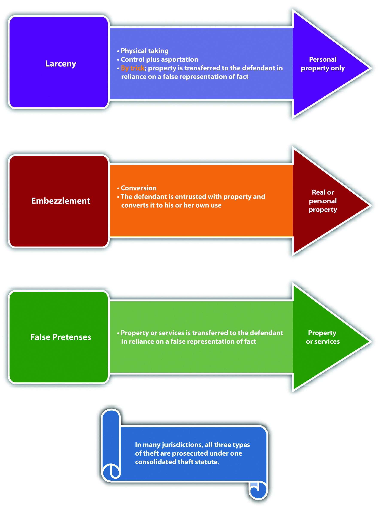
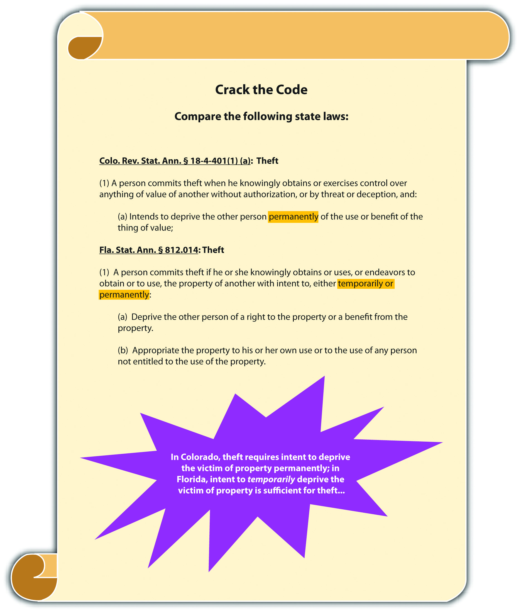
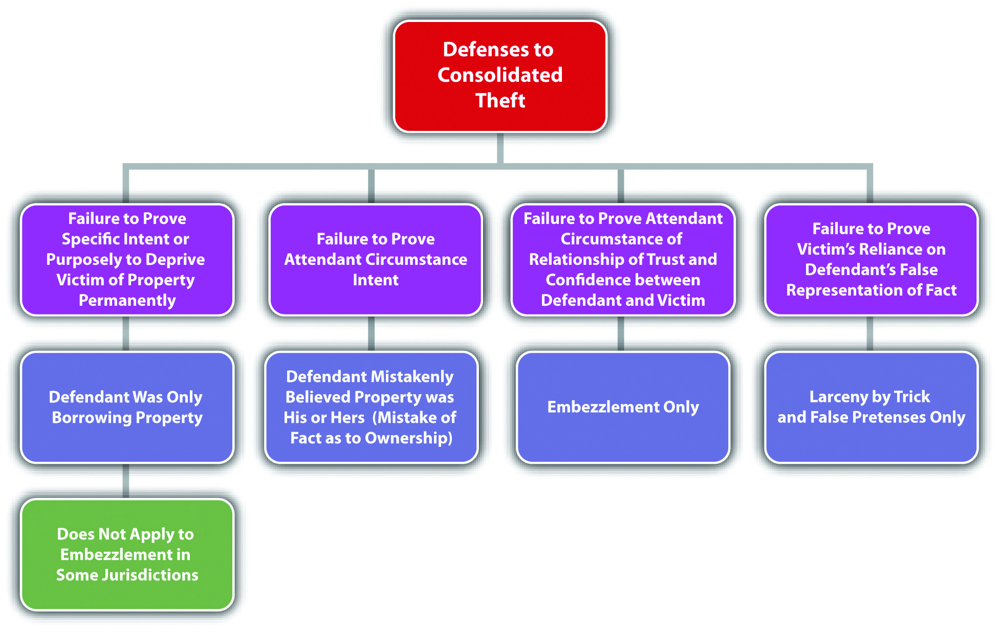

Although crimes against the person such as murder and rape are considered extremely heinous, crimes against property can cause enormous loss, suffering, and even personal injury or death. In this section, you review different classifications of nonviolent theft crimes that are called white-collar crimesGenerally refers to nonviolent commercial theft. when they involve commercial theft. Upcoming sections analyze theft crimes that involve force or threat, receiving stolen property, and crimes that invade or damage property, such as burglary and arson. Computer crimes including hacking, identity theft, and intellectual property infringement are explored in an exercise at the end of the chapter.
Historically, nonviolent theft was broken down into three categories: larcenyTheft of personal property by a physical taking., embezzlementTheft of real or personal property by conversion., and false pretensesTheft of real property, personal property, or services by a false representation of fact.. The categories differ in the type of property that can be stolen and the method of stealing. Modern jurisdictions combine all three categories of nonviolent theft into one consolidated theft statuteA statute that criminalizes theft by larceny, embezzlement, and false pretenses., with a uniform grading system largely dependent on the value of the stolen property. The Model Penal Code consolidates all nonviolent theft offenses, including receiving stolen property and extortion, under one grading system (Model Penal Code § 223.1). What follows is a discussion of theft as defined in modern consolidated theft statutes, making note of the traditional distinctions among the various theft categories when appropriate. Theft has the elements of criminal act, criminal intent, attendant circumstances, causation, and harm, as is discussed in this chapter.
The criminal act element required under consolidated theft statutes is stealing real propertyLand and anything permanently attached to it., personal propertyMovable objects., or services. Real property is land and anything permanently attached to land, like a building. Personal property is any movable item. Personal property can be tangible propertyProperty that can be touched or held., like money, jewelry, vehicles, electronics, cellular telephones, and clothing. Personal property can also be intangible propertyProperty that has value but cannot be touched or held, for example, stocks and bonds., which means it has value, but it cannot be touched or held, like stocks and bonds. The Model Penal Code criminalizes theft by unlawful taking of movable property, theft by deception, theft of services, and theft by failure to make required disposition of funds received under one consolidated grading provision (Model Penal Code §§ 223.1, 223.2, 223.3, 223.7, 223.8).
The act of stealing can be carried out in more than one way. When the defendant steals by a physical taking, the theft is generally a larceny theft. The act of taking is twofold. First, the defendant must gain control over the item. Then the defendant must move the item, which is called asportation, as it is with kidnapping.Britt v. Commonwealth, 667 S.E.2d 763 (2008), accessed March 8, 2011, http://scholar.google.com/scholar_case?case=2834311189194937383&q= larceny+asportation&hl=en&as_sdt=2,5&as_ylo=1999. Although asportation for kidnapping must be a certain distance in many jurisdictions, the asportation for larceny can be any distance—even the slightest motion is sufficient.Britt v. Commonwealth, 667 S.E.2d 763 (2008), accessed March 8, 2011, http://scholar.google.com/scholar_case?case=2834311189194937383&q= larceny+asportation&hl=en&as_sdt=2,5&as_ylo=1999. Control plus asportation can be accomplished by the defendant’s physical act or by deceiving the victim into transferring the property with a false representation of fact. This is called larceny by trickTheft committed by a false representation of fact that results in the defendant’s possession of the stolen personal property.. Because larceny requires a physical taking, it generally only pertains to personal property.
Another way for a defendant to steal property is to convert it to the defendant’s use or ownership. Conversion generally occurs when the victim transfers possession of the property to the defendant, and the defendant thereafter appropriates the property transferred. When the defendant steals by conversion, the theft is generally an embezzlement theft.Commonwealth v. Mills, 436 Mass. 387 (2002), accessed March 7, 2011, http://scholar.google.com/scholar_case?case=14428947695245966729&q= larceny+false+pretenses+embezzlement&hl=en&as_sdt=2,5&as_ylo=1997. Embezzlement could occur when the defendant gains possession of property from a friendship or a family relationship or from a paid relationship such as employer-employee or attorney-client. Embezzlement does not require a physical taking, so it can pertain to real or personal property.
When the defendant steals by a false representation of fact, and the subject of the theft is a service, the theft is generally a false pretenses theft.Cal. Penal Code § 484(a), accessed March 8, 2011, http://law.onecle.com/california/penal/484.html. False pretenses can also be used to steal personal or real property and is very similar to larceny by trick in this regard. What differentiates false pretenses from larceny by trick is the status of the property after it is stolen, which is discussed under the harm element of consolidated theft statutes.
To summarize, whether the defendant steals by a physical taking, a conversion, or a false representation of fact, and whether the defendant steals real or personal property or a service, the crime is theft under modern consolidated theft statutes and is graded primarily on the value of the property or service stolen.
Jeremy stops by the local convenience store on his way to work and buys some cigarettes. Before paying for the cigarettes, Jeremy slips a package of chewing gum into his pocket and does not pay for it. Jeremy continues walking to his job at a local gas station. When one of the customers buys gas, Jeremy only rings him up for half of the amount purchased. Once the gas station closes, Jeremy takes the other half out of the cash register and puts it in his pocket with the chewing gum. After work, Jeremy decides to have a drink at a nearby bar. While enjoying his drink, he meets a patron named Chuck, who is a taxi driver. Chuck mentions that his taxi needs a tune-up. Jeremy offers to take Chuck back to the gas station and do the tune-up in exchange for a taxi ride home. Chuck eagerly agrees. The two drive to the gas station, and Jeremy suggests that Chuck take a walk around the block while he performs the tune-up. While Chuck is gone, Jeremy lifts the hood of the taxi and then proceeds to read a magazine. When Chuck returns twenty-five minutes later, Jeremy tells him the tune-up is complete. Chuck thereafter drives Jeremy home for free.
In this scenario, Jeremy has performed three separate acts of theft. When Jeremy slips the package of chewing gum into his pocket without paying for it, he has physically taken personal property, which is a larceny theft. When Jeremy fails to ring up the entire sale for a customer and pockets the rest from the cash register, he has converted the owner of the gas station’s cash for his own use, which is an embezzlement theft. When Jeremy falsely represents to Chuck that he has performed a tune-up of Chuck’s taxi and receives a free taxi ride in payment, he has falsely represented a fact in exchange for a service, which is a false pretenses theft. All three of these acts of theft could be prosecuted under one consolidated theft statute. The three stolen items have a relatively low value, so these crimes would probably be graded as a misdemeanor. Grading of theft under consolidated theft statutes is discussed shortly.
Figure 11.1 Diagram of Consolidated Theft Act
The criminal intent element required under consolidated theft statutes is either specific intent or purposely, or general intent or knowingly to perform the criminal act, depending on the jurisdiction. The Model Penal Code requires purposeful intent for theft by unlawful taking, deception, theft of services, and theft by failure to make required disposition of funds received (Model Penal Code §§ 223.2, 223.3, 223.7, 223.8).
When the criminal intent is specific or purposely, the defendant must intend the criminal act of stealing and must also intend to keep the stolen property.Itin v. Ungar, 17 P.3d 129 (2000), accessed March 8, 2011, http://scholar.google.com/scholar_case?case=12387802565107699365&q=theft+requires+ specific+intent+to+permanently+deprive&hl=en&as_sdt=2,5&as_ylo=1999. This could create a potential failure of proof or affirmative defense that the defendant was only “borrowing” property and intended to return it after use. In some jurisdictions, specific or purposeful intent to keep the property does not apply to embezzlement theft under the traditional definition.In the Matter of Schwimmer, 108 P.3d 761 (2005), accessed March 8, 2011, http://scholar.google.com/scholar_case?case=637183228950627584&q= embezzlement+borrowing+%22no+intent+to+permanently+deprive%22&hl= en&as_sdt=2,5&as_ylo=1999. Thus in these jurisdictions, a defendant who embezzles property and later replaces it cannot use this replacement as a defense.
Jorge goes to the nursery and spends hundreds of dollars on plants for his garden. Some of the plants are delicate and must be put into the ground immediately after purchase. When Jorge gets home, he discovers that he has no shovel because he loaned it to his brother-in-law a few weeks ago. He notices that his neighbor’s shovel is leaning against his neighbor’s garage. If Jorge borrows his neighbor’s shovel so that he can get his expensive plants into the ground, this appropriation would probably not constitute the crime of theft under a consolidated theft statute in certain jurisdictions. Jorge had the intent to perform the theft act of taking personal property. However, Jorge did not have the specific or purposeful intent to deprive his neighbor of the shovel permanently, which is often required for larceny theft. Thus in this scenario, Jorge may not be charged with and convicted of a consolidated theft offense.
Review the example with Jeremy given in Section 11 "Example of Consolidated Theft Act". Change this example and assume when Jeremy charged his customer for half of the sale and later pocketed fifty dollars from the cash register, his intent was to borrow this fifty dollars to drink at the bar and replace the fifty dollars the next day when he got paid. Jeremy probably has the criminal intent required for theft under a consolidated theft statute in many jurisdictions. Although Jeremy did not have the specific or purposeful intent to permanently deprive the gas station owner of fifty dollars, this is not generally required with embezzlement theft, which is the type of theft Jeremy committed. Jeremy had the intent to convert the fifty dollars to his own use, so the fact that the conversion was only a temporary deprivation may not operate as a defense, and Jeremy may be charged with and convicted of theft under a consolidated theft statute.
Figure 11.2 Crack the Code
As stated previously, the taking in both larceny by trick and false pretenses occurs when the defendant makes a false representation of fact that induces the victim to transfer the property or services. In many jurisdictions, the defendant must have general intent or knowledge that the representation of fact is false and must make the false representation with the specific intent or purposely to deceive.People v. Lueth, 660 N.W.2d 322 (2002), accessed March 9, 2011, http://scholar.google.com/scholar_case?case=16580779180424536816&q= false+pretenses+knowledge+statement+is+false+intent+to+deceive&hl= en&as_sdt=2,5&as_ylo=1999. The Model Penal Code criminalizes theft by deception when a defendant purposely “creates or reinforces a false impression, including false impressions as to law, value, intention or other state of mind” (Model Penal Code § 223.3(1)).
Review the example with Jeremy in Section 11 "Example of Consolidated Theft Act". In this example, Jeremy told Chuck that he performed a tune-up of Chuck’s taxi, when actually he just lifted the hood of the taxi and read a magazine. Because Jeremy knew the representation was false, and made the representation with the intent to deceive Chuck into providing him with a free taxi ride home, Jeremy probably has the appropriate intent for theft of a service by false pretenses, and he may be subject to prosecution for and conviction of this offense under a consolidated theft statute.
All theft requires the attendant circumstance that the property stolen is the property of another.Alaska Stat. § 11.46.100, accessed March 8, 2011, http://law.justia.com/codes/alaska/2009/title-11/chapter-11-46/article-01/sec-11-46-100. The criminal intent element for theft must support this attendant circumstance element. Thus mistake of fact or law as to the ownership of the property stolen could operate as a failure of proof or affirmative defense to theft under consolidated theft statutes in many jurisdictions.Haw. Rev. Stat. § 708-834, accessed March 8, 2011, http://law.justia.com/codes/hawaii/2009/volume-14/title-37/chapter-708/hrs-0708-0834-htm. The Model Penal Code provides an affirmative defense to prosecution for theft when the defendant “is unaware that the property or service was that of another” (Model Penal Code § 223.1(3) (a)).
Review the example of a case lacking consolidated theft intent given in Section 11 "Example of a Case Lacking Consolidated Theft Intent". Change this example so that Jorge arrives home from the nursery and begins frantically searching for his shovel in his toolshed. When he fails to locate it, he emerges from the shed and notices the shovel leaning against his neighbor’s garage. Jorge retrieves the shovel, uses it to put his plants into the ground, and then puts it into his toolshed and locks the door. If the shovel Jorge appropriated is actually his neighbor’s shovel, which is an exact replica of Jorge’s, Jorge may be able to use mistake of fact as a defense to theft under a consolidated theft statute. Jorge took the shovel, but he mistakenly believed that it was his, not the property of another. Thus the criminal intent for the attendant circumstance of victim ownership is lacking, and Jorge probably will not be charged with and convicted of theft under a consolidated theft statute.
Theft under a consolidated theft statute also typically requires the attendant circumstance element of lack of victim consent.Tex. Penal Code § 31.03(b) (1), accessed March 8, 2011, http://law.justia.com/codes/texas/2009/penal-code/title-7-offenses-against-property/chapter-31-theft. Thus victim consent to the taking or conversion may operate as a failure of proof or affirmative defense in many jurisdictions. Keep in mind that all the rules of consent discussed in Chapter 5 "Criminal Defenses, Part 1" and Chapter 10 "Sex Offenses and Crimes Involving Force, Fear, and Physical Restraint" apply. Thus consent obtained fraudulently, as in larceny by trick or false pretenses, is not valid and effective and cannot form the basis of a consent defense.
Review the example given in Section 11 "Example of Consolidated Theft Act" with Jeremy. Change the example so that the owner of the gas station is Jeremy’s best friend Cody. Cody tells Jeremy several times that if he is ever short of cash, he can simply take some cash from the register, as long as it is not more than fifty dollars. Assume that on the date in question, Jeremy did not ring up half of a sale but simply took fifty dollars from the register because he was short on cash, and he needed money to order drinks at the bar. In this case, Jeremy may have a valid defense of victim’s consent to any charge of theft under a consolidated theft statute.
In many jurisdictions, embezzlement theft under a consolidated theft statute requires the attendant circumstance element of a relationship of trust and confidence between the victim and the defendant.Commonwealth v. Mills, 436 Mass. 387 (2002), accessed March 7, 2011, http://scholar.google.com/scholar_case?case=14428947695245966729&q= larceny+false+pretenses+embezzlement&hl=en&as_sdt=2,5&as_ylo=1997. This relationship is generally present in an employer-employee relationship, a friendship, or a relationship where the defendant is paid to care for the victim’s property. However, if the attendant circumstance element of trust and confidence is lacking, the defendant will not be subject to prosecution for embezzlement under a consolidated theft statute in many jurisdictions.
Tran sells an automobile to Lee. Tran’s automobile has personalized license plates, so he offers to apply for new license plates and thereafter send them to Lee. Lee agrees and pays Tran for half of the automobile, the second payment to be made in a week. Lee is allowed to take possession of the automobile and drives it to her home that is over one hundred miles away. Tran never receives the second payment from Lee. When the new license plates arrive, Tran phones Lee and tells her he is going to keep them until Lee makes her second payment. In some jurisdictions, Tran has not embezzled the license plates. Although Tran and Lee have a relationship, it is not a relationship based on trust or confidence. Tran and Lee have what is called a debtor-creditor relationship (Lee is the debtor and Tran is the creditor). Thus if the jurisdiction in which Tran sold the car requires a special confidential relationship for embezzlement, Tran may not be subject to prosecution for this offense.
A false pretenses or larceny by trick theft under a consolidated theft statute requires the additional attendant circumstance element of victim reliance on the false representation of fact made by the defendant.People v. Lueth, 660 N.W.2d 332 (2002), accessed March 9, 2011, http://scholar.google.com/scholar_case?case=16580779180424536816&q= false+pretenses+knowledge+statement+is+false+intent+to+deceive&hl= en&as_sdt=2,5&as_ylo=1999. Thus a victim’s knowledge that the statement is false could operate as a failure of proof or affirmative defense in many jurisdictions.
Review the example with Jeremy and Chuck in Section 11 "Example of Consolidated Theft Act". Change the example so that Chuck does not walk around the block as Jeremy asked him to do. Instead, Chuck walks around the corner and then spies on Jeremy while he reads a magazine with the hood open. Chuck takes out his phone and makes a videotape of Jeremy. After twenty-five minutes, Chuck walks back over to Jeremy and thereafter gives Jeremy the free taxi ride home. When they arrive at Jeremy’s house, Chuck shows Jeremy the videotape and threatens to turn it over to the district attorney if Jeremy does not pay him two hundred dollars. In this case, Jeremy probably has a valid defense to false pretenses theft. Chuck, the “victim,” did not rely on Jeremy’s false representation of fact. Thus the attendant circumstance element of false pretenses is lacking and Jeremy may not be subject to prosecution for and conviction of this offense. Keep in mind that this is a false pretenses scenario because Chuck gave Jeremy a service, and larceny by trick only applies to personal property. Also note that Chuck’s action in threatening Jeremy so that Jeremy will pay him two hundred dollars may be the criminal act element of extortion, which is discussed shortly.
Figure 11.3 Diagram of Defenses to Consolidated Theft
The criminal act must be the factual and legal cause of the consolidated theft harm, which is defined in Section 11 "Consolidated Theft Harm".
Consolidated theft is a crime that always includes bad results or harm, which is the victim’s temporary or permanent loss of property or services, no matter how slight the value. In the case of theft by false pretenses and larceny by trick, in some jurisdictions, the status of the property after it has been stolen determines which crime was committed. If the defendant becomes the owner of the stolen property, the crime is a false pretenses theft.People v. Curtin, 22 Cal. App. 4th 528 (1994), accessed March 10, 2011, http://scholar.google.com/scholar_case?case=3765672039191216315&q= false+pretenses+theft+of+a+service&hl=en&as_sdt=2,5&as_ylo=1999. If the defendant is merely in possession of the stolen property, the crime is larceny by trick.People v. Beaver, 186 Cal. App. 4th 107 (2010), accessed March 10, 2011, http://scholar.google.com/scholar_case?case=12194560873043980150&q= false+pretenses+theft+of+a+service&hl=en&as_sdt=2,5&as_ylo=1999. When the stolen property is money, the crime is false pretenses theft because the possessor of money is generally the owner.People v. Curtin, 22 Cal. App. 4th 528 (1994), accessed March 10, 2011, http://scholar.google.com/scholar_case?case=3765672039191216315&q= false+pretenses+theft+of+a+service&hl=en&as_sdt=2,5&as_ylo=1999.
Review the example given in Section 11 "Example of a Case Lacking Embezzlement Attendant Circumstance" with Tran and Lee. In this example, Lee paid Tran half of the money she owed him for his vehicle, with a promise to pay the remainder in one week. Assume that Lee never intended to pay the second installment when she made the deal with Tran. Tran signs the ownership documents over to Lee, promises to send Lee the license plates when they arrive, and watches as Lee drives off, never to be seen again. In this example, Lee has most likely committed false pretenses theft, rather than larceny by trick. Lee made a false representation of fact with the intent to deceive and received a vehicle for half price in exchange. The vehicle belongs to Lee, and the ownership documents are in her name. Thus Lee has ownership of the stolen vehicle rather than possession, and the appropriate offense is false pretenses theft.
Jacob, a car thief, runs up to Nanette, who is sitting in her Mercedes with the engine running. Jacob tells Nanette he is a law enforcement officer and needs to take control of her vehicle to pursue a fleeing felon. Nanette skeptically asks Jacob for identification. Jacob pulls out a phony police badge and says, “Madam, I hate to be rude, but if you don’t let me drive your vehicle, a serial killer will be roaming the streets looking for victims!” Nanette grudgingly gets out of the car and lets Jacob drive off, never to be seen again. In this example, Jacob has obtained the Mercedes, but the ownership documents are still in Nanette’s name. Thus Jacob has possession of the stolen vehicle rather than ownership, and the appropriate offense is larceny by trick.
Grading under consolidated theft statutes depends primarily on the value of the stolen property. Theft can be graded by degreesConnecticut Jury Instructions §§ 53a-119, 53a-122 through 53a-125b, accessed March 10, 2011, http://www.jud.ct.gov/JI/criminal/part9/9.1-1.htm. or as petty theftTheft of low-value property., which is theft of property with low value, and grand theftTheft of high-value property., which is theft of property with significant value.Cal. Penal Code § 486, accessed March 10, 2011, http://law.onecle.com/california/penal/486.html. Petty theft or theft of the second or third degree is generally a misdemeanor, while grand theft or theft of the first degree is generally a felony, felony-misdemeanor, or gross misdemeanor, depending on the amount stolen or whether the item stolen is a firearm.Cal. Penal Code § 489, accessed March 10, 2011, http://law.onecle.com/california/penal/489.html. The Model Penal Code grades theft as a felony of the third degree if the amount stolen exceeds five hundred dollars or if the property stolen is a firearm, automobile, airplane, motorcycle, or other motor-propelled vehicle (Model Penal Code § 223.1(2)). The Model Penal Code grades all other theft as a misdemeanor or petty misdemeanor (Model Penal Code § 223.1(2)). When determining the value of property for theft, in many jurisdictions, the value is market value, and items can be aggregated if they were stolen as part of a single course of conduct.Connecticut Jury Instructions §§ 53a-119, 53a-122 through 53a-125b, accessed March 10, 2011, http://www.jud.ct.gov/JI/criminal/part9/9.1-1.htm. The Model Penal Code provides that “[t]he amount involved in a theft shall be deemed to be the highest value, by any reasonable standard…[a]mounts involved in thefts committed pursuant to one scheme or course of conduct, whether from the same person or several persons, may be aggregated in determining the grade or the offense” (Model Penal Code § 223.1(2) (c)).
Table 11.1 Comparing Larceny, Larceny by Trick, False Pretenses, and Embezzlement
| Crime | Criminal Act | Type of Property | Criminal Intent | Attendant Circumstance | Harm |
|---|---|---|---|---|---|
| Larceny | Taking control plus asportation | Personal | Specific or purposely to deprive victim permanently* | Victim’s property (applies to all four theft crimes), lack of victim consent | Property loss |
| Larceny by trick | Taking by a false representation of fact | Personal | Specific or purposely to deceive* | Victim reliance on false representation | Victim loses possession of property |
| False pretenses | Taking by a false representation of fact | Personal, real, services | Specific or purposely to deceive* | Victim reliance on false representation | Victim loses ownership of property |
| Embezzlement | Conversion | Personal, real | Specific or purposely to deprive victim temporarily or permanently* | Relationship of trust and confidence between defendant and victim (some jurisdictions) | Property loss either temporary or permanent |
| *Some jurisdictions include general intent or knowingly to commit the criminal act. | |||||
| Note: Grading under consolidated theft statutes is based primarily on property value; market value is the standard, and property can be aggregated if stolen in a single course of conduct. | |||||
The federal government criminalizes theft by use of the federal postal service as federal mail fraudA scheme to defraud that utilizes the US Postal Service., a felony.18 U.S.C. § 1341, accessed March 18, 2011, http://www.law.cornell.edu/uscode/18/usc_sec_18_00001341----000-.html. Like every federal offense, federal mail fraud is criminal in all fifty states. In addition, a defendant can be prosecuted by the federal and state government for one act of theft without violating the double jeopardy protection in the Fifth Amendment of the federal Constitution.
The criminal act element required for federal mail fraud is perpetrating a “scheme to defraud” using the US mail.18 U.S.C. § 1341, accessed March 18, 2011, http://www.law.cornell.edu/uscode/18/usc_sec_18_00001341----000-.html. Scheme has been given a broad interpretation and includes “everything designed to defraud by representations as to the past or present, or suggestions and promises as to the future.”Durland v. U.S., 161 U.S. 306, 313 (1896), http://supreme.justia.com/us/161/306. Even one act of mailing is sufficient to subject the defendant to a criminal prosecution for this offense.U.S. v. McClelland, 868 F.2d 704 (1989), accessed March 18, 2011, http://scholar.google.com/scholar_case?case=8428034080210339517&q= federal+mail+fraud+%22one+letter%22&hl=en&as_sdt=2,5&as_ylo=2000. In addition, the defendant does not need to actually mail anything himself or herself.U.S. v. McClelland, 868 F.2d 704 (1989), accessed March 18, 2011, http://scholar.google.com/scholar_case?case=8428034080210339517&q= federal+mail+fraud+%22one+letter%22&hl=en&as_sdt=2,5&as_ylo=2000. The criminal intent element required for federal mail fraud is general intent or knowingly or awareness that the mail will be used to further the scheme.U.S. v. McClelland, 868 F.2d 704 (1989), accessed March 18, 2011, http://scholar.google.com/scholar_case?case=8428034080210339517&q= federal+mail+fraud+%22one+letter%22&hl=en&as_sdt=2,5&as_ylo=2000. The defendant does not have to intend that the US Mail will be used to commit the theft, as long as use of the postal service is reasonably foreseeable in the ordinary course of business.U.S. v. McClelland, 868 F.2d 704 (1989), accessed March 18, 2011, http://scholar.google.com/scholar_case?case=8428034080210339517&q= federal+mail+fraud+%22one+letter%22&hl=en&as_sdt=2,5&as_ylo=2000. The defendant’s criminal act, supported by the appropriate intent, must be the factual and legal cause of the harm, which is the placement of anything in any post office or depository to be sent by the US Postal Service in furtherance of the scheme to defraud.18 U.S.C. § 1341, accessed March 18, 2011, http://www.law.cornell.edu/uscode/18/usc_sec_18_00001341----000-.html.
The Mail Fraud Act has been used to punish a wide variety of schemes, including Ponzi schemesA scheme where the defendant appropriates investments unlawfully and pays investors by using money from new investors., like the recent high-profile Bernie Madoff case.Constance Parten, “After Madoff: Notable Ponzi Schemes,” CNBC website, accessed March 11, 2011, http://www.cnbc.com/id/41722418/After_Madoff_Most_Notable_Ponzi_Scams. In a Ponzi scheme, the defendant informs investors that their investment is being used to purchase real estate, stocks, or bonds, when, in actuality, the money is appropriated by the defendant and used to pay earlier investors. Eventually this leads to a collapse that divests all investors of their investment.
Federal statutes also punish bank fraud,18 U.S.C. § 1344, accessed March 11, 2011, http://www.law.cornell.edu/uscode/18/usc_sec_18_00001344----000-.html. health care fraud,18 U.S.C. § 1347, accessed March 11, 2011, http://www.law.cornell.edu/uscode/18/usc_sec_18_00001347----000-.html. securities fraud,18 U.S.C. § 1348, accessed March 11, 2011, http://www.law.cornell.edu/uscode/18/usc_sec_18_00001348----000-.html. and fraud in foreign labor contracting.18 U.S.C. § 1351, accessed March 11, 2011, http://www.law.cornell.edu/uscode/18/usc_sec_18_00001351----000-.html. Fraud committed by wire, television, and radio also is federally criminalized.18 U.S.C. § 1343, accessed March 11, 2011, http://www.law.cornell.edu/uscode/18/usc_sec_18_00001343----000-.html.
Bernard Madoff $50 Billion Ponzi Scheme: How Did He Do It?
The facts behind Bernie Madoff’s Ponzi scheme are explained in this video:
All theft generally requires the attendant circumstances that the property stolen is the property of another, and victim consent to the taking, conversion, or transfer of ownership is lacking.
Answer the following questions. Check your answers using the answer key at the end of the chapter.